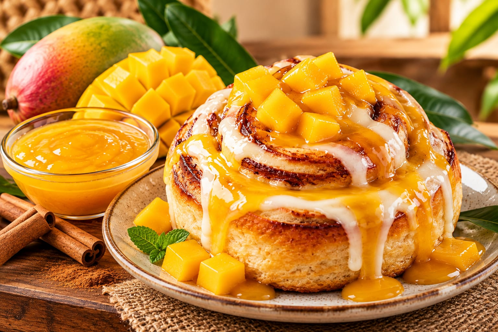
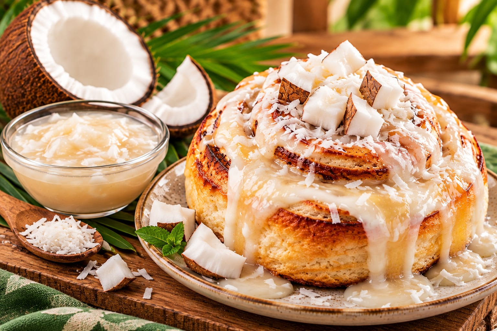
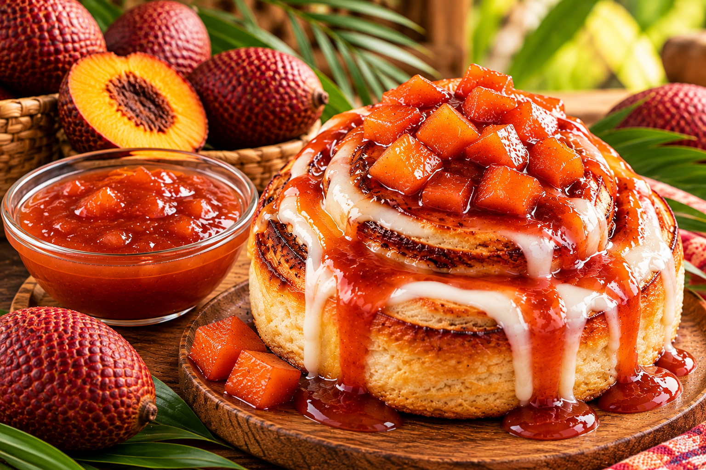
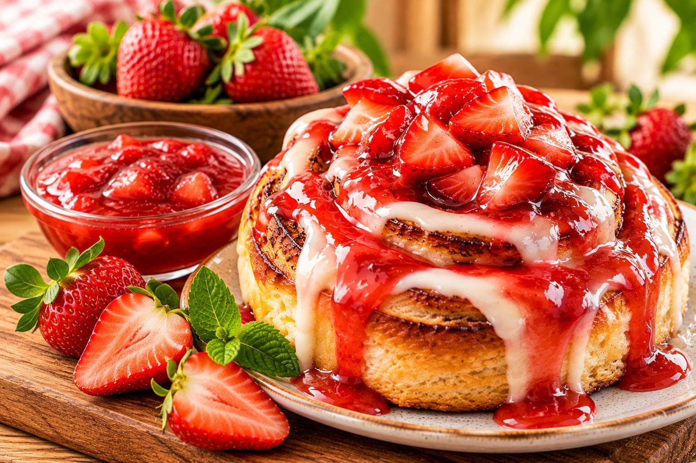
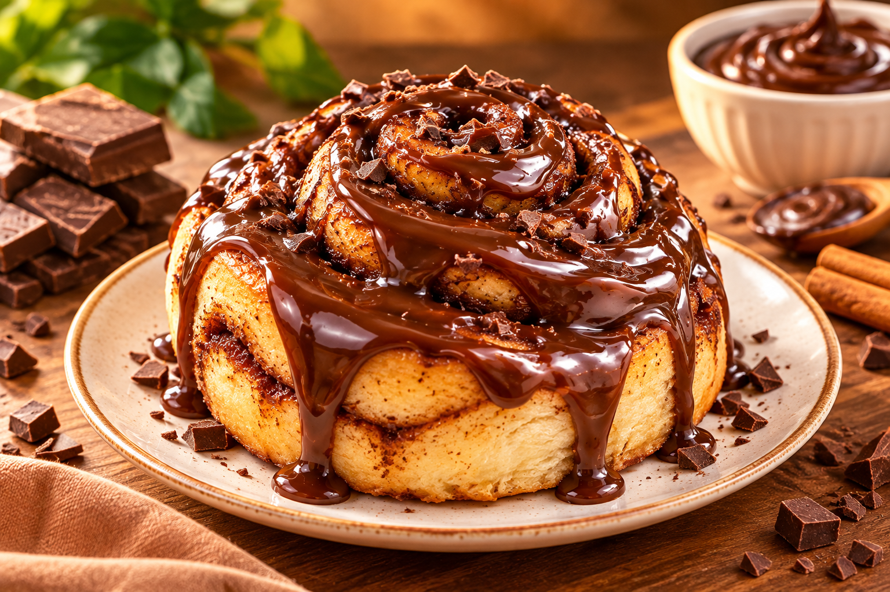
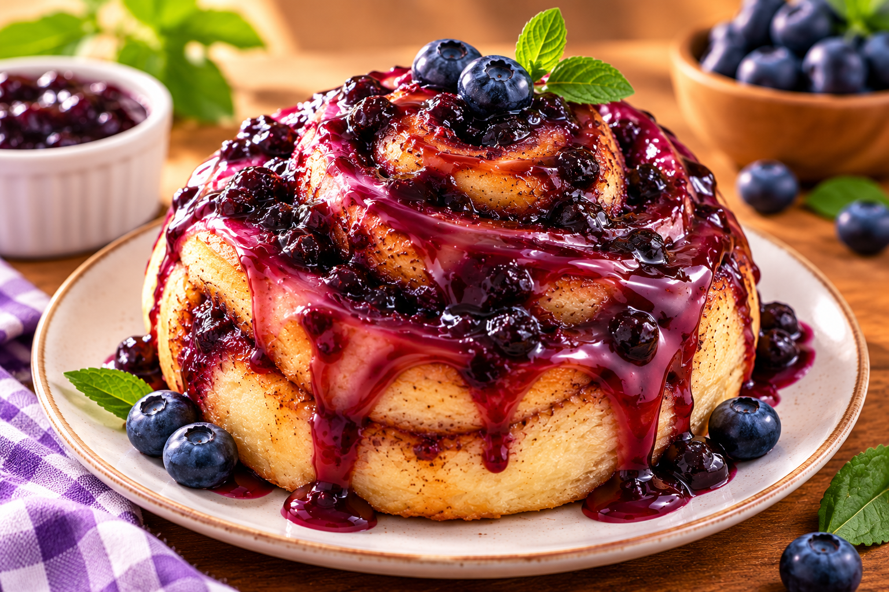
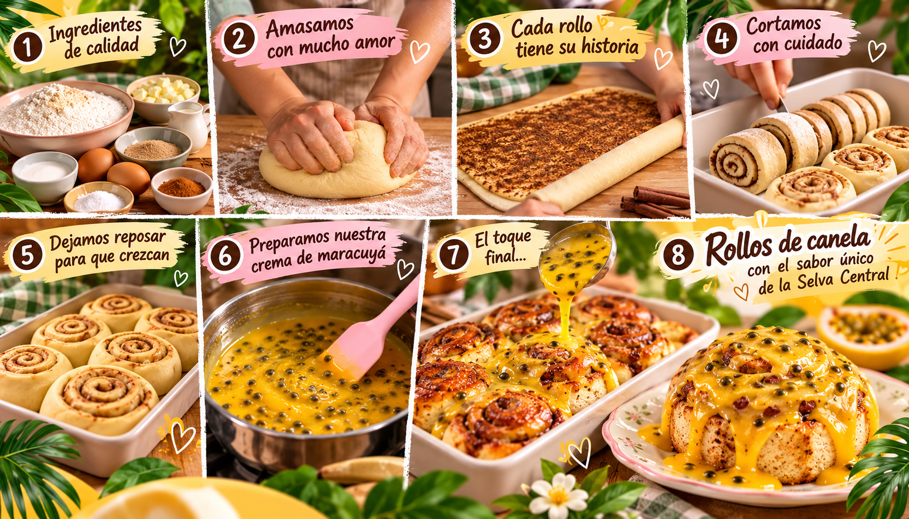

01
01
MARACUYÁ
Rollo de Maracuyá
Canela, glaseado y el toque ácido del maracuyá.
Disponibilidad por confirmar Consultar sabor ↗✦ ROLLOS DE CANELA ARTESANALES · SELVA CENTRAL
Rollos de canela artesanales combinados con sabores inspirados en las frutas de la Selva Central: un postre diferente, rico y con identidad de nuestra región.
Sabores de nuestra tierra
Una espiral de canela, una lluvia de glaseado y la inspiración de las frutas tropicales que hacen única a nuestra marca.
.png) Hecho para disfrutar
Hecho para disfrutar
Nuestra pasión por los rollos de canela se encuentra con los colores, aromas y sabores de la Selva Central.
Explorar sabores ↓Encuentra tu favorito
01
Canela, glaseado y el toque ácido del maracuyá.
Disponibilidad por confirmar Consultar sabor ↗
02Dulzura tropical sobre la espiral de canela.
Disponibilidad por confirmar Consultar sabor ↗
03Suave, cálido y cercano, como un abrazo dulce.
Disponibilidad por confirmar Consultar sabor ↗ 04
04
Un toque frutal intenso para un momento diferente.
Disponibilidad por confirmar Consultar sabor ↗
05Una propuesta tropical inspirada en la fruta amazónica.
Idea de nuevo sabor Consultar sabor ↗
06Un sabor frutal de color y dulzura irresistible.
Idea de nuevo sabor Consultar sabor ↗
07El carácter del cacao en una propuesta dulce.
Idea de nuevo sabor Consultar sabor ↗
08Una combinación frutal para quienes aman lo dulce.
Idea de nuevo sabor Consultar sabor ↗Las propuestas señaladas como ideas de nuevos sabores no representan productos confirmados. Consulta la disponibilidad antes de realizar tu pedido.
Nuestra galería
Cada rollo guarda una combinación especial de canela, dulzura y sabores de nuestra Selva Central.
 01
01
 02
02
 03
03

04 05
05
SAMKANELI · El sabor que endulza nuestra selva
 Sabor amazónico
Sabor amazónico


El rollo de canela ya se reconoce en cualquier parte. SAMKANELI lo mezcla con las frutas de la Selva Central para que un antojo familiar tenga un sabor propio.
Canela y masa como punto de partida.
Sabores locales como protagonistas.
Una experiencia amable y especial.
El sabor que endulza nuestra selva
Aplicaciones
Mockups conceptuales de cómo la identidad puede acompañar al producto.
Son propuestas visuales, no productos fabricados.
Contacto
Cuéntanos qué sabor te llama la atención y consulta su disponibilidad.
Los datos de contacto reales están pendientes; se activan en
config.js.